규칙 파일: AGENTS.md 한 곳에 모으기
지난 영상 댓글에 "루프 엔지니어링이나 자동 QA(Quality Assurance)는 실제로 어떻게 하냐"는 질문이 달렸어요. 그래서 이 팀이 Claude Code와 Codex로 게임을 만들 때 쓰는 세팅을 규칙 파일부터 하나씩 열어 보여 줘요. 다섯 칸(규칙 파일, 역할 나누기, 자동 테스트, 성능 검사, 루프)마다 끝에 에이전트에게 줄 예시 명령이 나오고, 같은 명령이 설명란에도 있어요.
먼저 프로젝트 폴더 slime-game/의 구성이 나와요. AGENTS.md 옆에 163줄, CLAUDE.md 옆에 3줄이라고 적혀 있어요. 규칙의 본문은 AGENTS.md에 있고 CLAUDE.md는 거의 비어 있다는 뜻이에요.

CLAUDE.md는 세 줄, 규칙은 AGENTS.md에
Codex는 AGENTS.md를, Claude Code는 CLAUDE.md를 읽어요. 그래서 CLAUDE.md 첫 줄에 @AGENTS.md를 두고, 규칙은 AGENTS.md 한 곳에만 써요. 고칠 때도 한 군데만 고치면 돼요. 아래 화면의 세 번째 줄은 작업 보드 운영을 docs/WORKFLOW.md에 따른다는 안내예요.
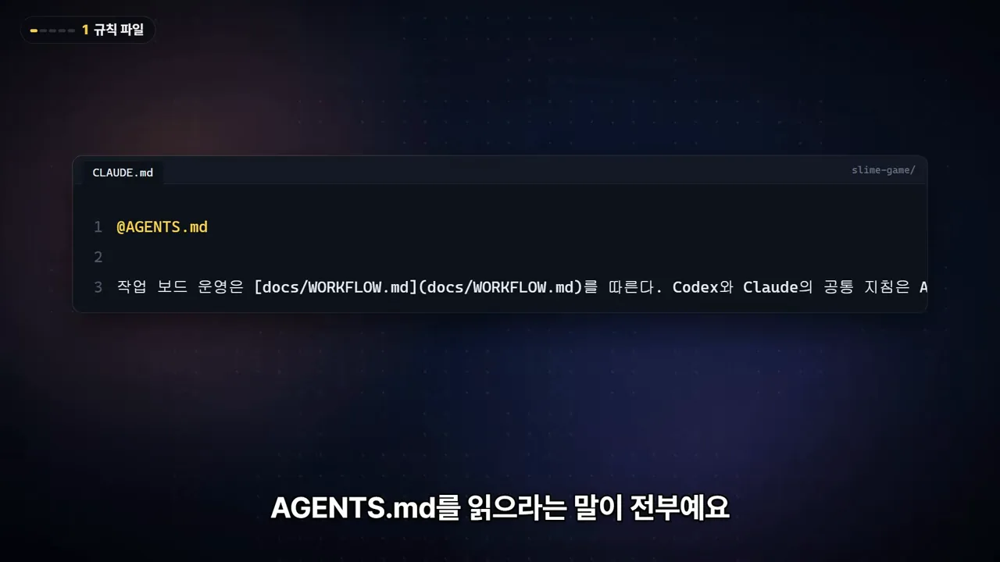
다음 화면은 이 연결을 그림으로 보여 줘요. 왼쪽 Codex는 곧바로 AGENTS.md로, 오른쪽 Claude Code는 CLAUDE.md 안의 @AGENTS.md를 거쳐 같은 파일로 이어져요.
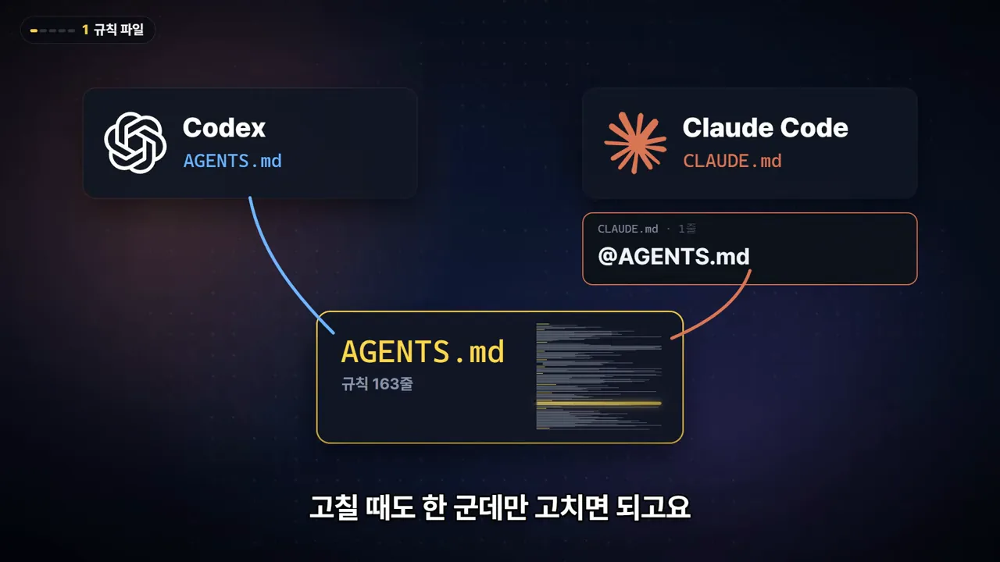
466줄까지 불었던 규칙 파일
이 파일이 한때 466줄이었어요. 지적할 때마다 한 줄씩 붙다 보니 거의 일기장이 됐대요. 지금도 유효한 규칙만 남기라고 시켰더니 117줄이 됐어요. 화면 왼쪽 긴 막대가 466줄, 오른쪽 위 짧은 막대가 117줄이고, 지운 내용은 아래 AGENTS_HISTORY.md로 옮겼어요.
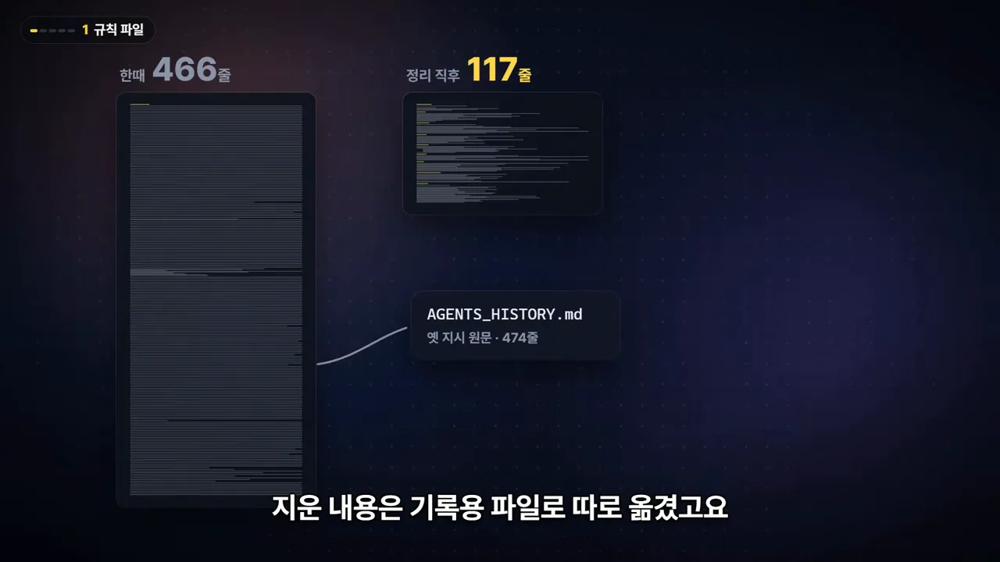
그런데 지금은 다시 163줄이에요. 그래서 요즘은 새로 정한 게 생기면 그 작업 폴더 메모에 날짜와 사용자가 한 말을 그대로 적게 해요. 화면 왼쪽이 그런 메모 두 개(quality-loop-v01/README.md, perf-log/NATIVE_PLAN.md)이고, 오른쪽 AGENTS.md에는 오래 갈 규칙만 한두 줄로 올려요.
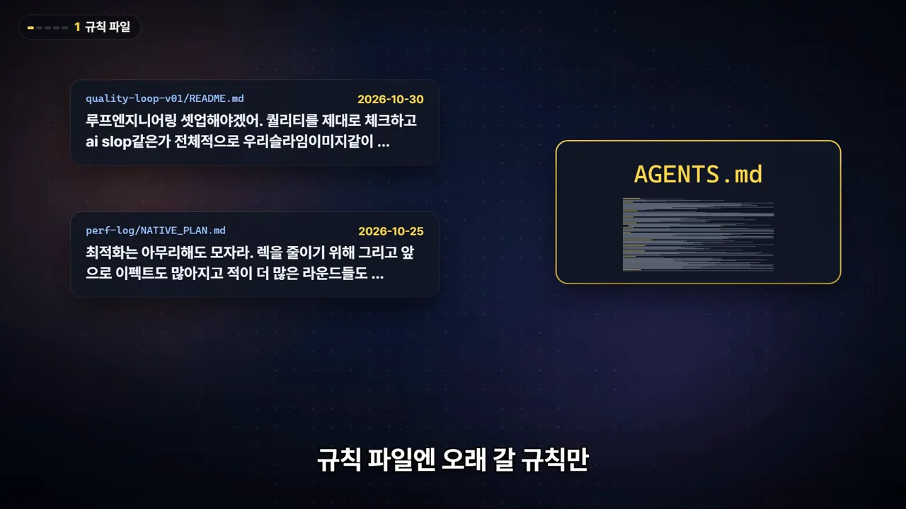
무엇을 넣나요
기본은 9화에서 말한 네 가지예요. 정보 없이 코딩하지 말 것, 무조건 동의하지 말 것, 테스트만 보고 완료라고 하지 말 것, 같은 실수를 반복하지 말 것. 여기에 이 팀이 필수로 보는 줄을 보태요. 첫째는 맨 위의 "최신 사용자 지시가 이 파일보다 우선한다"예요. 파일이 낡아도 방금 한 말을 따르게 하려는 줄이에요. 화면에서 노란 테두리로 짚은 맨 윗줄이 그거예요.
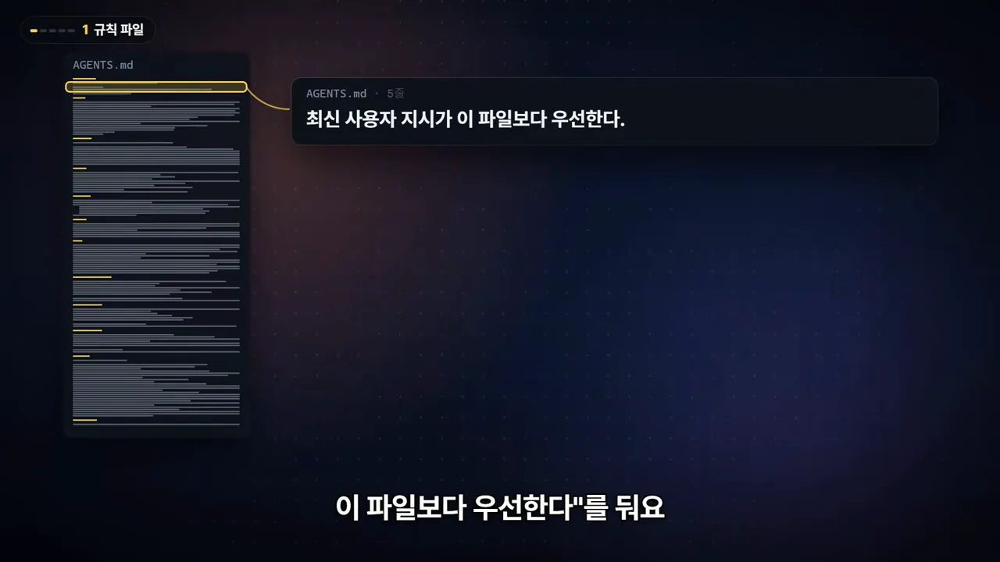
둘째는 "사용자가 직접 고친 파일은 덮어쓰지 않는다"예요. 손으로 고친 그림이나 설정을 AI(Artificial Intelligence)가 자기 버전으로 다시 덮는 걸 막아요. 화면 아래 흰 박스는 실제 세션에서 AI가 이 규칙대로 "저장하지 않은 편집은 그대로 뒀다"고 보고한 대목이에요.
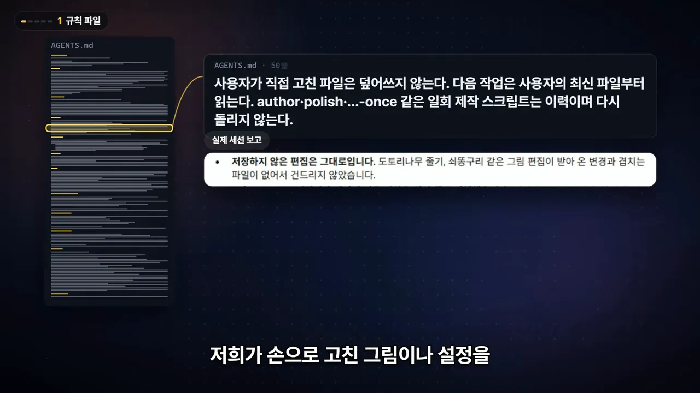
제일 아끼는 한 줄은 "자동 검사 통과는 재미나 미술 승인이 아니다"예요. 그래서 AI가 보고할 때 코드로 확인한 것, 실제 화면·소리로 본 것, 확인 못 한 것을 나눠 말하게 해 놨어요. 아래 보고서는 위에 '확인한 것(Godot 4.7.2, 화면 없이 도는 검사)', 아래에 '확인하지 못한 것과 남은 일'로 나뉘어 있어요.

이 칸의 예시 명령은 설명란에 이렇게 적혀 있어요.
규칙은 AGENTS.md 한 곳에만 써 줘. CLAUDE.md엔 @AGENTS.md 한 줄만 둬. 맨 위에는 "최신 지시가 이 파일보다 우선", "내가 직접 고친 파일은 덮어쓰지 않기", "자동 검사 통과는 재미·미술 승인이 아님"을 넣고, 작업 중에 새로 정한 건 그 작업 폴더 메모에 날짜랑 내 말 그대로 적어.
— 영상 설명란, 1 규칙 파일
Claude와 Codex는 어떻게 일을 나눌까요
메인은 Claude Code예요. 화면의 Claude Code 카드에는 '메인 · 코드·검사·커밋', Codex 카드에는 'gpt-6-astra · 이미지 생성'이라고 적혀 있고, Claude 아래에 '이미지 생성'이 X로 표시돼 있어요. 그래서 소품이나 도트 원본처럼 그림이 들어가는 일은 Claude가 골라서 Codex에게 넘겨요. 아래 네 칸은 Codex가 그린 소품 시안(연필, 캔, 모종삽, 화분)이고, 노란 테두리의 화분이 팀이 고른 안이에요.
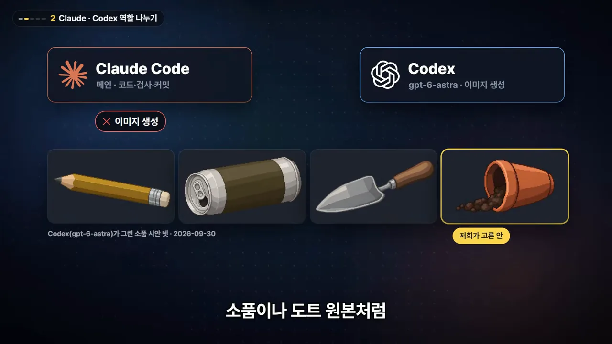
규칙이 하나 있어요. 생성한 이미지를 게임에 바로 넣지 않아요. 원본은 게임에 들어갈 도트 크기에 맞춰 Aseprite에서 다시 만들어요. 왼쪽이 Codex가 만든 매끈한 화분, 오른쪽이 Aseprite에서 289×143 도트로 다시 찍은 원본이에요.
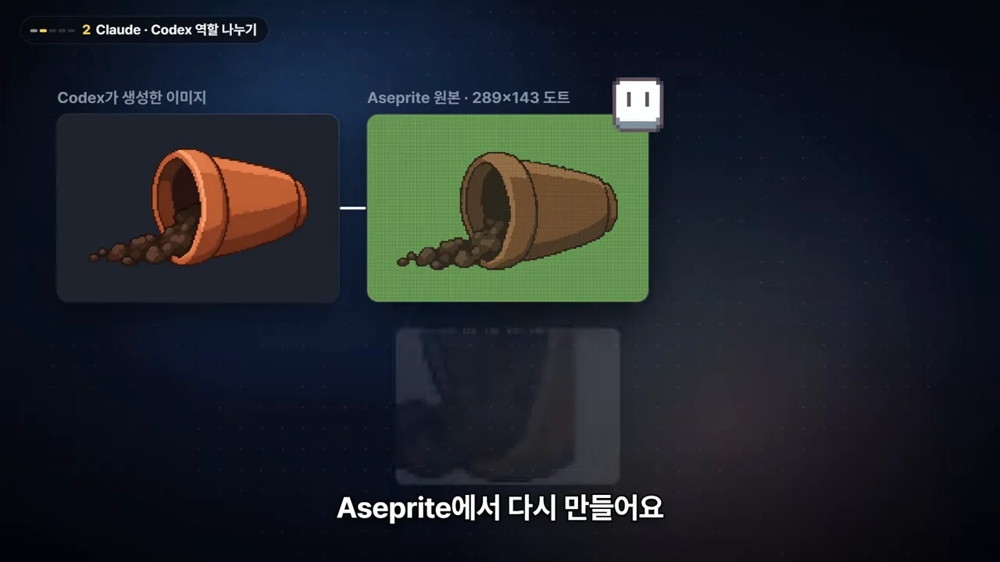
넘기고 돌려받는 순서
Claude가 먼저 작업 지시서를 써요. 지시서에는 네 칸이 있어요. 먼저 읽을 것, 목표(사용자가 한 말 그대로), 고쳐도 되는 범위, 그리고 하면 안 되는 일이에요. 화면에서 빨간 테두리로 짚은 칸이 마지막 '하면 안 되는 일'이에요.
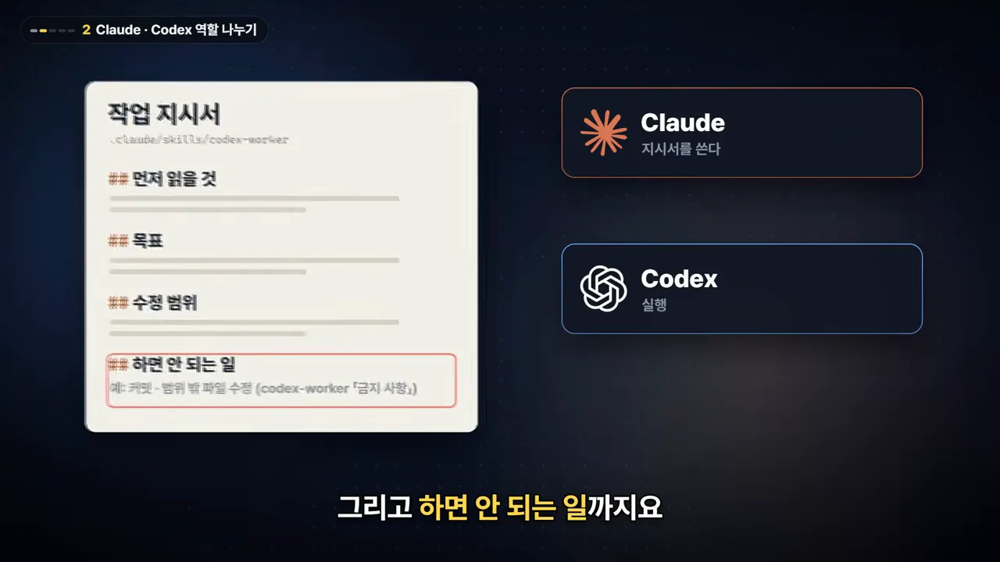
Codex는 일을 끝내면 결과를 셋 중 하나로 보고해요. 화면 아래 배지 세 개, PASS(통과), FAIL(실패), NOT_RUN(못 돌림)이에요. 검사를 못 돌렸으면 못 돌렸다고 써야 해요. 못 돌린 걸 통과라고 쓰면 안 되니까요.
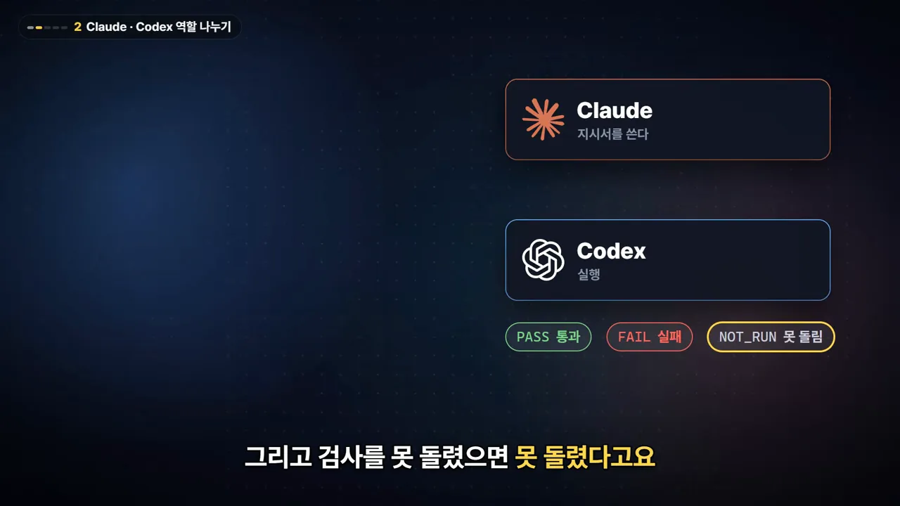
그다음이 중요해요. Claude는 그 보고를 그대로 믿지 않아요. 실제로 바뀐 파일을 보고서와 맞춰 보고(왼쪽 체크 목록), Codex가 돌렸다는 검사를 자기가 다시 돌리고(오른쪽 위 'Claude가 다시 돌림' 터미널), 렌더한 이미지도 직접 열어 봐요(오른쪽 아래 화분 두 장). 다 맞을 때만 Claude가 커밋해요.

흐름을 한 장으로 모으면 이래요.
flowchart LR A["Claude: 작업 지시서"] --> B["Codex: 실행"] B --> C["보고: PASS · FAIL · NOT_RUN"] C --> D["Claude가 바뀐 파일 · 검사 · 렌더를 다시 확인"] D -->|"다 맞을 때만"| E["Claude가 커밋"]
그림이 필요한 작업은 Codex한테 넘기는 스킬을 만들어 줘. 지시서엔 먼저 읽을 것, 목표(내 말 그대로), 고쳐도 되는 범위, 하면 안 되는 일을 쓰고, Codex는 통과·실패·못 돌림 중 하나로 보고하게 해. 결과는 네가 바뀐 파일·검사·렌더를 다시 확인한 뒤에만 커밋해.
— 영상 설명란, 2 역할 나누기
자동 테스트: 단계 나누기와 보스전 봇
Godot는 화면 없이도 게임을 돌릴 수 있어요. 이 팀은 이걸로 검사를 만들어 뒀고, 지금 138개예요. 이걸 세 단계로 나눠요. 화면의 막대 길이가 단계별 검사 개수예요.
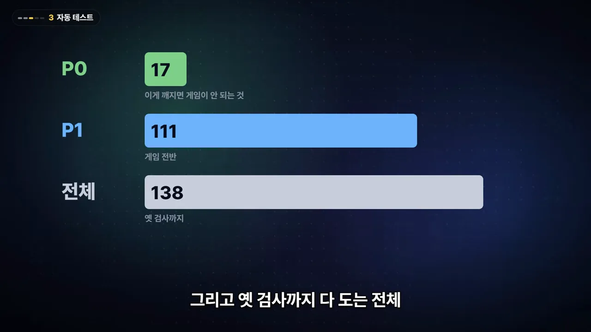
바뀐 파일을 보고 단계를 골라요
어느 단계를 돌릴지는 무엇이 바뀌었는지 보고 자동으로 정해요. 그림이나 문서만 바뀌었으면 P0만, 전투나 이동처럼 여러 곳이 같이 쓰는 코드가 바뀌었으면 P1까지 돌려요. 전체는 사람이 정할 때만 돌려요. 화면 위 터미널은 문서 한 줄을 바꾼 경우로 '핵심 변경 없음: P0만 실행'이 찍혀요. 아래는 전투 코드 body_motion.gd를 바꾼 경우로, 공유 전투·이동 코드라서 game 단계가 선택돼요.
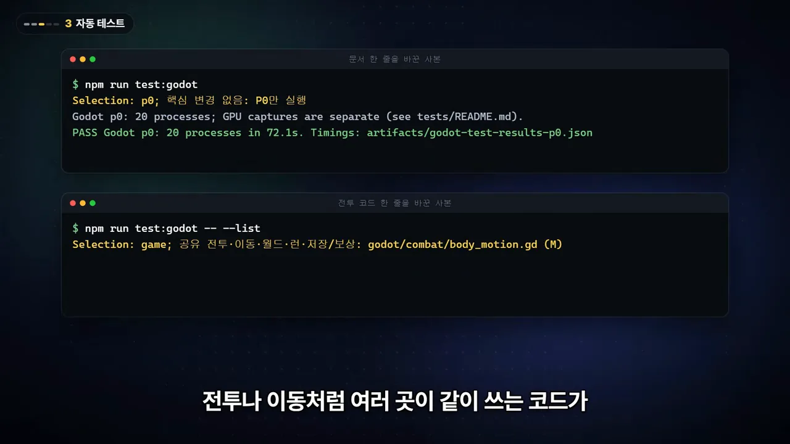
| 바뀐 것 | 돌리는 단계 |
|---|---|
| 그림이나 문서만 | P0 (핵심 17개) |
| 전투·이동처럼 여러 곳이 같이 쓰는 코드 | P1까지 (게임 전반 111개) |
| 사람이 정할 때 | 전체 (138개, 옛 검사 포함) |
처음부터 이랬던 건 아니에요. 예전엔 AI가 뭐 하나 고칠 때마다 많이 돌렸는데, 전부 돌리면 10분 넘게 걸렸어요. 같은 걸 반복하는 게 보기에도 답답해서 바꿨대요. 아래 막대는 고칠 때마다 P0, P1, 옛 검사까지 길게 돌던 예전 모습이에요.
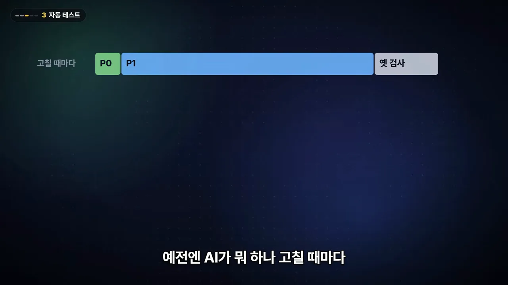
보스전은 봇이 직접 깨 봐요
보스전에는 봇도 붙였어요. 숫자가 맞는지 보는 검사가 아니라, 보스를 직접 플레이해서 깰 수 있는지 보는 거예요. AI에게 봇을 만들게 하면서 플레이어가 쓰는 조작만 쓰게 했어요. 화면 아래 버튼 네 개, 조준·밀기·Space·슬링이 그 조작이에요. 그래야 "봇이 깼다"가 "플레이어도 깰 수 있다"는 뜻이 되거든요.
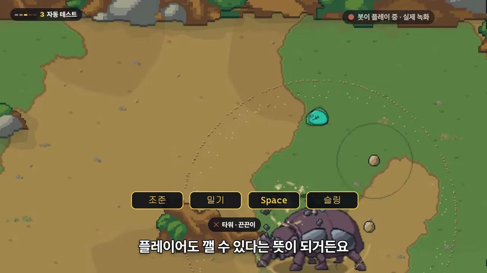
각 보스전을 무기마다 한 판씩 화면 없이 돌려서 깼는지, 몇 초 걸렸는지, 체력을 얼마나 잃었는지 남겨요. 오른쪽 카드가 결과예요. 기본 무기 41초(체력 -6), 혀 162초(-9), 채찍 77초(-9)로 셋 다 깼어요. 실제로 싸우면 4분 넘게 걸리는 세 판인데, 터미널 마지막 줄을 보면 화면 없이 8.3초에 끝났어요. 그래서 전투 코드를 고칠 때마다 이 봇도 같이 돌아요.
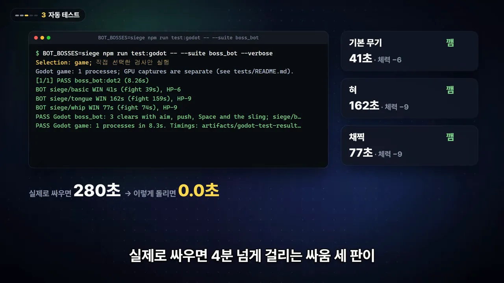
다만 봇이 이겼다고 사람도 쉽게 깬다는 뜻은 아니에요. 그래서 이 기록은 "깰 길이 있다"는 확인으로만 써요. 봇 코드 파일에도 그 말이 주석으로 박혀 있어요.
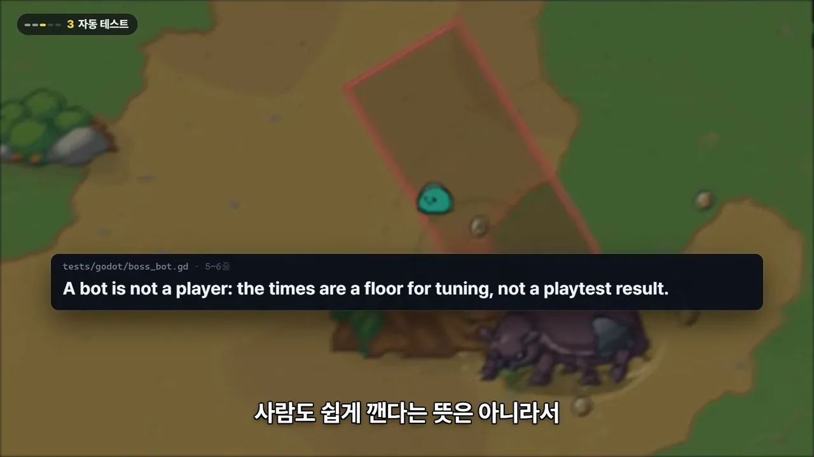
테스트를 "깨지면 게임이 안 되는 것(P0)"과 "게임 전반(P1)"으로 나누고, 바뀐 파일에 맞는 단계만 골라 돌리는 명령을 만들어 줘. 보스마다 플레이어 조작만 쓰는 봇이 화면 없이 싸워서 깼는지, 걸린 시간, 잃은 체력을 남기게 하고, 전투 코드를 고치면 같이 돌게 해.
— 영상 설명란, 3 자동 테스트
성능 검사: 같은 판에서 재고, 답이 같은지 확인
게임이 버벅일 때 먼저 할 일은 바로 고치는 게 아니에요. 어디서 시간이 제일 오래 걸리는지, 즉 병목을 찾는 거예요. 그러려면 매번 같은 조건으로 잴 수 있어야 해요.
그래서 화면 없이 도는 측정용 판을 따로 만들었어요. 실제 한 판을 돌리면서 적을 240마리 근처로 계속 붙잡아 두고, 봇이 다가가서 쏘고 먹고 대시해요. 시드를 고정해서 몇 번을 돌려도 같은 판이 나와요. 화면은 그 측정용 판으로, 가운데 슬라임 주변에 적이 빽빽하게 몰려 있어요.
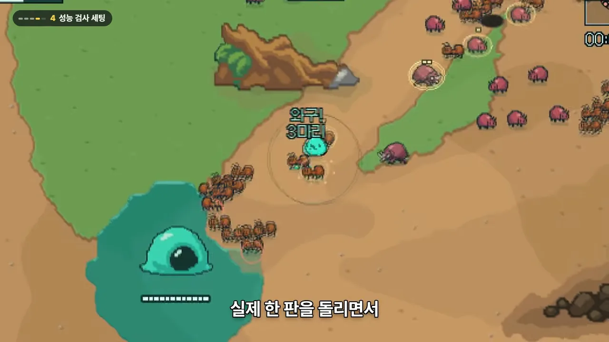
이 판을 돌리면서 AI가 함수마다 시간을 재면 병목이 숫자로 나와요. 60프레임을 내려면 한 프레임을 16.7ms 안에 끝내야 해요. 맨 위 빈 막대가 그 16.7ms 예산이고, 아래가 함수별 최대치예요. 탄 판정이 최대 6.5ms로 가장 길고, 벌레 그리기 5.8ms, 적 AI 4ms가 뒤를 이어요.
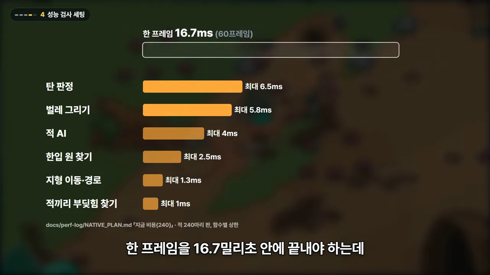
옮긴 뒤엔 답이 같은지부터 봐요
병목은 코드를 손보거나 더 빠른 언어로 옮겨서 고쳐요. 이렇게 바꾼 뒤엔 회귀 테스트가 중요해요. 빨라져도 게임 결과가 달라지면 안 되니까요. 이 팀은 느린 부분을 GDScript에서 C++로 옮기고, 두 쪽 답을 같이 계산해서 비교했어요. 적 역할을 고르는 코드를 옮길 때는 화면처럼 615,598번 비교해서 다른 답이 0개였어요.
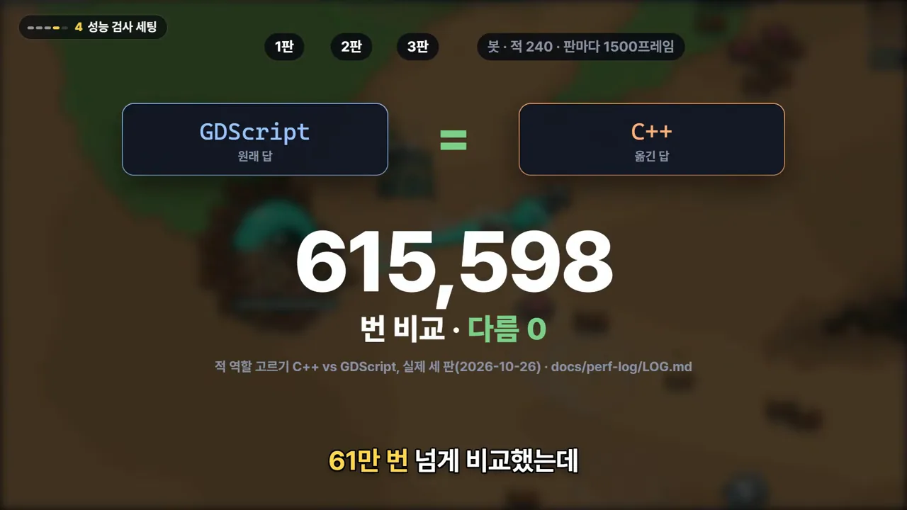
이 비교가 진짜 버그도 잡았어요. 탄 판정을 옮겼을 때 판마다 명중 결과가 156~221번 달랐거든요. 아래 박스가 원인이에요. C++ 쪽은 "명중 없음"을 -1로 돌려줬는데, GDScript 쪽은 0 이상만 명중으로 보고 알집 번호는 음수로 쓰고 있었어요. 두 쪽을 잇는 부분에서 약속이 어긋난 거예요.
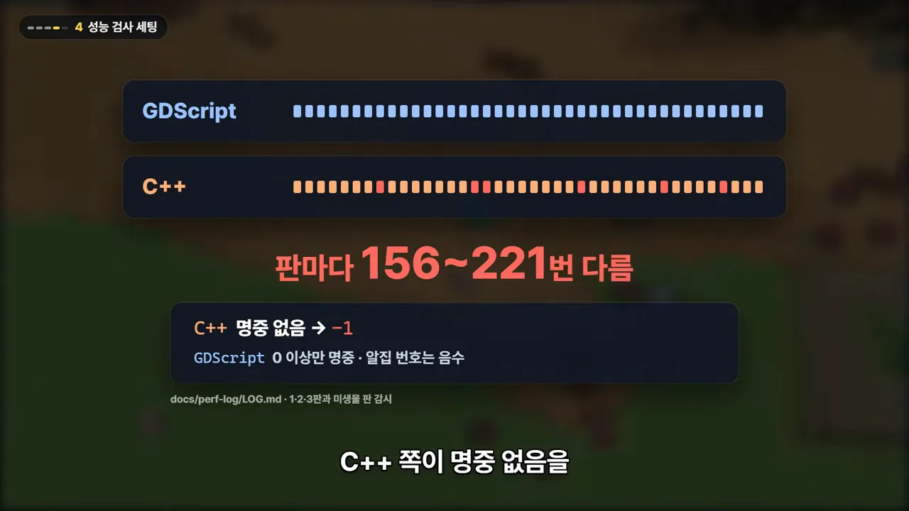
목표는 고른 FPS예요
성능 작업의 목적은 결국 FPS(Frames Per Second)예요. 평균만 높은 게 아니라 끊김 없이 고르게요. 화면은 2판, 적 240마리, 60Hz 조건에서 잰 결과예요. 평균 FPS는 58.5에서 59.5로 조금 올랐지만, 1% 저점은 37.3에서 43.6으로 더 크게 올랐어요.
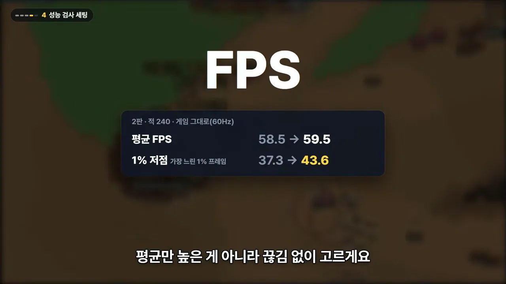
그래서 고칠 때마다 같은 판, 같은 조건에서 재서 기록으로 남겨 두는 게 좋아요. 측정한 날이 다른 숫자는 참고값으로만 적어 둬요. 이 화면의 1판 33.3→53.8, 2판 43.4→59.9가 그런 숫자예요. 오른쪽 위에 '참고값 · 측정 시기 다름' 표시가 붙어 있어요.
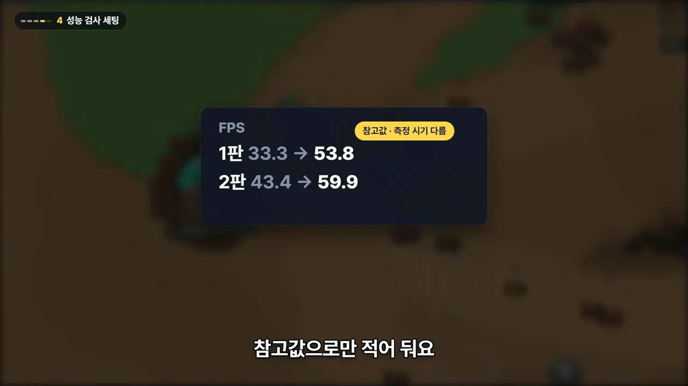
적이 제일 많은 장면을 시드 고정으로 재현하는 측정용 판을 만들고, 함수마다 프레임 시간을 재서 병목을 찾아 줘. 고친 뒤엔 바꾸기 전과 결과가 같은지 비교하는 회귀 테스트를 돌리고, FPS 평균과 1% 저점을 같은 조건에서 재서 날짜와 함께 기록에 남겨.
— 영상 설명란, 4 성능 검사
루프는 정답 없는 그림 작업에만
루프 엔지니어링은 사람이 매번 "다시 해 봐"라고 말하던 걸, AI가 스스로 확인하고 다시 하게 돌려 두는 거예요. 먼저 알아 둘 게 있어요. 루프는 토큰을 정말 많이 써요. 영상은 Anthropic이 AI로 레트로 게임 메이커를 만든 실험을 예로 들어요. 왼쪽이 모델 혼자 만든 경우로 20분에 9달러, 오른쪽이 만들고·검사하고·다시 만드는 루프로 6시간에 200달러예요. 20배가 넘어요.
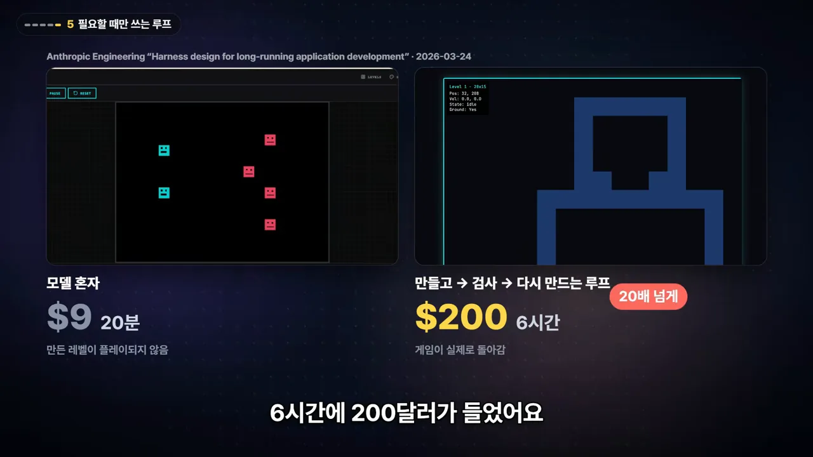
그리고 루프는 어느 정도 돌면 점수가 더 안 오르는 지점이 와요. 아래 곡선이 그 모양이에요. 처음엔 가파르게 오르다가 평평해지고, 그 어딘가에 '사람' 표시가 서 있어요. 언제 사람이 끼어들지 정해 두는 게 제일 중요하다는 뜻이에요.

클로버와 민들레를 루프로 돌려 봤어요
이 팀은 최근 맵 소품으로 쓸 클로버와 민들레를 루프로 돌려 봤어요. 왼쪽이 클로버, 오른쪽이 민들레 소품이에요.
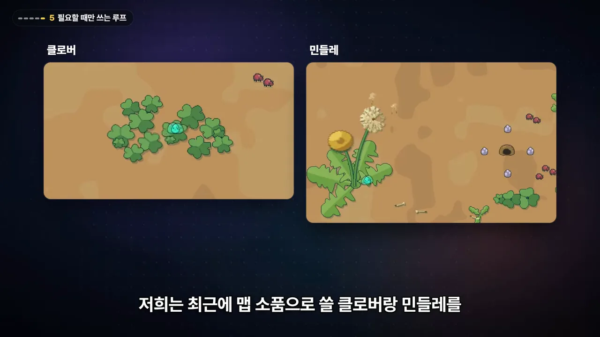
세팅은 네 칸이에요. 첫째, 회차마다 스냅샷을 남겨 어느 회차로든 돌아갈 수 있게 해요. 둘째, 코드가 정확히 셀 수 있는 검사예요. 화면 왼쪽처럼 1~2점짜리 잡티는 1만 칸당 20개 이하, 끊긴 선은 art-gate.cjs 스크립트로, 주인공보다 밝은 장식은 3% 이하여야 해요. 하나라도 기준을 넘으면 바로 실패예요. 아래 빨간 박스는 실제 세션에서 '모서리 L자 겹침 29곳과 끊김 2곳'이 걸려 다시 돈 기록이에요.
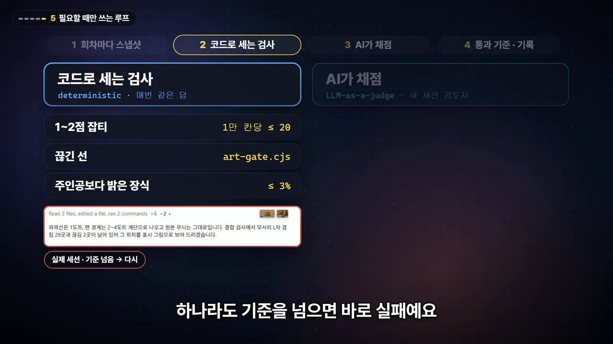
셋째, 숫자로 못 재는 것은 AI가 채점해요. 'AI 티'(slop, 0~10, 낮을수록 좋음)와 '저희 그림체와 어울림'(fit, 0~10, 높을수록 좋음) 두 항목이에요. 채점은 새 세션의 처음 보는 AI에게 맡기는데, 화면에서는 이 방식을 LLM-as-a-judge라고 불러요. 그린 AI는 자기 그림에 점수가 후하거든요. 아래 노란 박스의 검토자 지시문이 그 원칙을 적은 거예요. "이 그림은 네가 만든 게 아니다. 파일을 고치지 말고 보고만 하라."
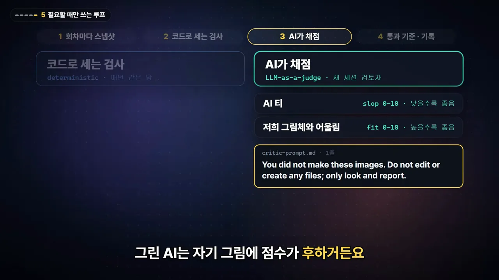
넷째, 통과 기준을 미리 정해요. 이 팀은 'AI 티 3점 이하 · 어울림 7점 이상'이에요. 기준을 넘을 때까지 고치고 다시 돌고, 통과한 것만 사람에게 보여 줘요. 뭘 왜 고쳤는지는 오른쪽처럼 rounds/round-N.md 파일로 회차마다 남겨요.
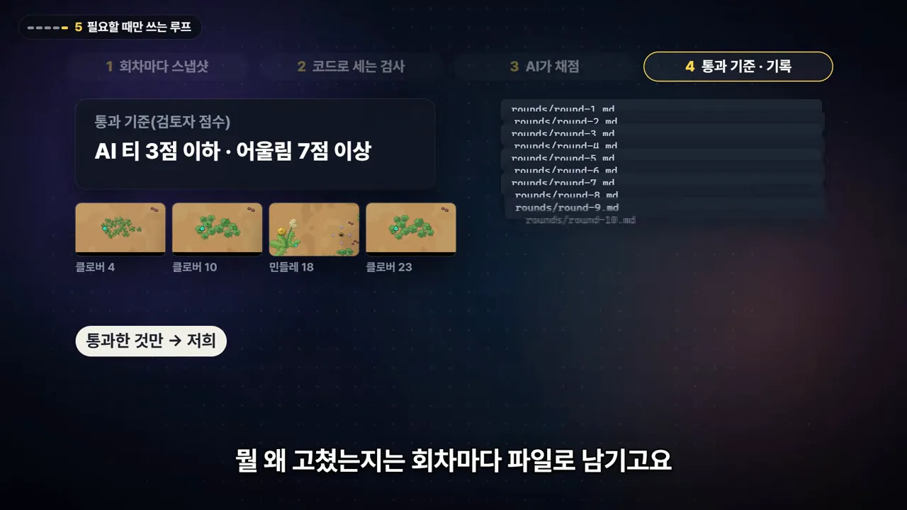
한 회차가 도는 흐름을 그림으로 모으면 이래요.
flowchart LR
A["그리기 · 고치기"] --> B["스냅샷 저장"]
B --> C{"코드로 세는 검사
잡티 · 끊긴 선 · 밝은 장식"}
C -->|"하나라도 넘음"| A
C -->|통과| D{"새 세션 검토자 둘
AI 티 ≤ 3 · 어울림 ≥ 7"}
D -->|미달| A
D -->|통과| E["사람에게 보여 줌"]
D -->|"점수 정체 · 회차 상한"| E
점수는 7점 근처에서 멈췄어요
결과를 보면, 노란 선 민들레는 3점에서 7점까지 금방 올랐어요. 그다음부터는 클로버(초록)도 민들레도 7점 근처에서 더 안 올라서, 노란 '정체 → 멈춤' 구간에서 멈췄어요. 그래프 아래 작은 글씨처럼 6회차부터는 검토자 둘의 평균이에요.
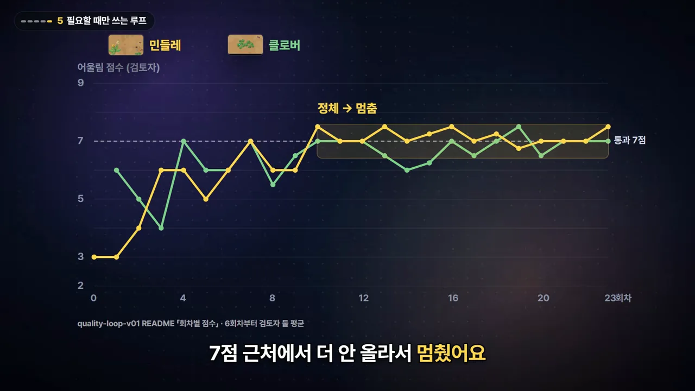
검토자 점수도 흔들려요. 같은 클로버 그림이 한 번은 통과, 한 번은 탈락이 나오기도 했어요. 그래서 검토자는 둘을 두고 평균을 쓰는 게 좋아요. 검토자와 기준도 정답이 아니어서 사람 눈으로 계속 맞춰 줘야 해요. 민들레는 21회차가 기준을 다 통과했는데, 팀 눈엔 18회차가 더 좋아 보였어요. 화면 왼쪽이 21회차, 오른쪽이 18회차예요.

그래서 저장해 둔 18회차로 돌아가 그걸 기준 그림으로 놓고, 검토 기준을 고치게 했어요. 스냅샷을 남겨 둔 덕에 가능한 일이에요.
이 그림 작업에 루프를 세팅해 줘. 회차마다 결과를 스냅샷으로 남기고, 잡티·끊긴 선처럼 셀 수 있는 건 스크립트로 재. "AI 티"와 "우리 그림체와 어울리는지"는 처음 보는 검토자 둘이 기준표·기준 그림만 보고 채점해서 평균 내. 회차 상한을 두고, 점수가 더 안 오르면 멈추고 나한테 보여 줘.
— 영상 설명란, 5 루프
안 하는 것, 대신 하는 것
코드는 테스트로 충분해서 이 팀은 코드에는 루프를 잘 안 돌려요. 코드에 루프를 쓰는 사람도 많지만, 이 팀은 그림이나 배경처럼 정답이 없는 작업에 주로 써요. 화면 왼쪽 터미널(테스트 통과 로그)에 '저희는 X 루프' 표시가 있고, 오른쪽이 루프를 쓰는 그림과 배경이에요.
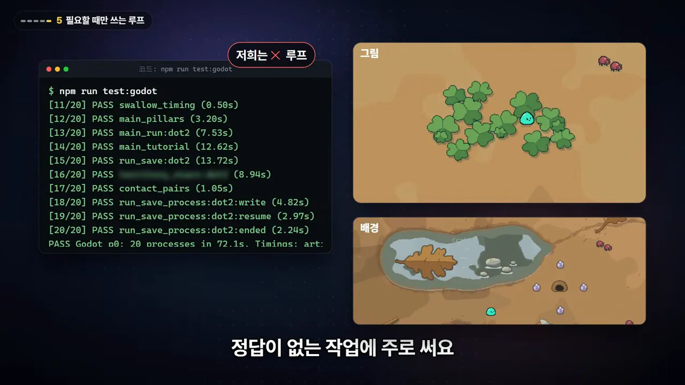
AI를 밤새 혼자 돌리는 자동 반복도 유행이지만, 이 팀은 그렇게까지는 안 해요. 이유는 화면 위 두 카드예요. 토큰이 6시간에 200달러나 들고, 'AI 채점 ≠ 저희 눈'(21회차 통과 vs 18회차 선택)이었으니까요. 그래서 아래 세 배지처럼 루프에 회차 상한을 두고, 점수가 정체하면 사람에게 돌아오게 해 놨어요.
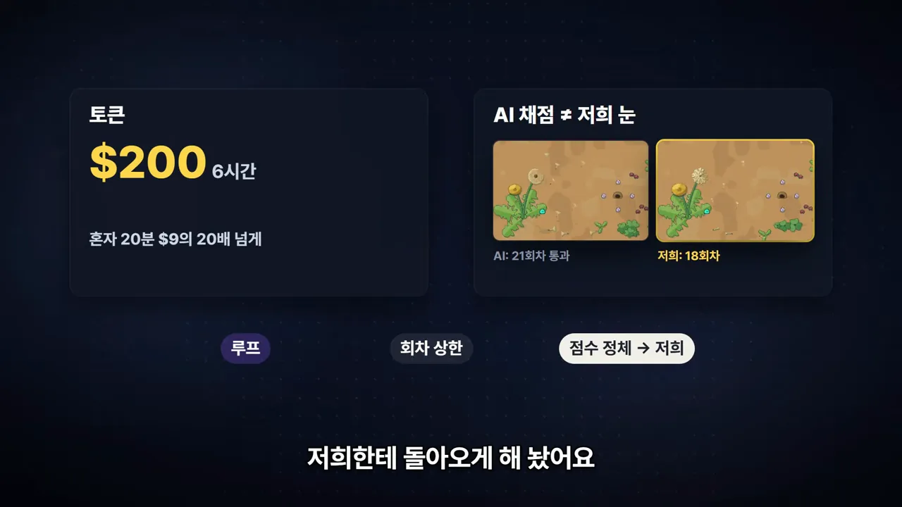
대신 세션을 여러 개 돌려요
그 대신 세션을 여러 개 동시에 돌려요. 화면처럼 하나는 그림 루프, 하나는 HUD(Heads-Up Display), 하나는 이펙트를 맡겨요.
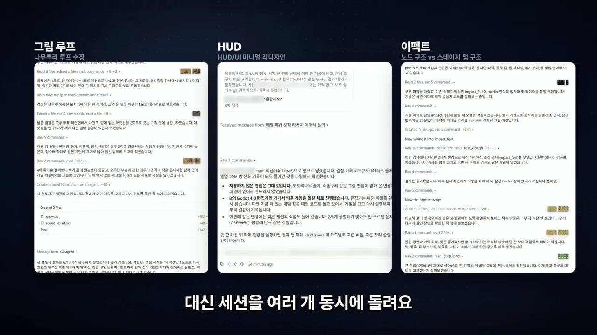
결과는 전부 main 하나로 모아요. 아래 git log --graph를 보면 클로버 작업, 보스 연못 작업 같은 커밋이 각자 갈래에서 와서 main으로 합쳐져요.
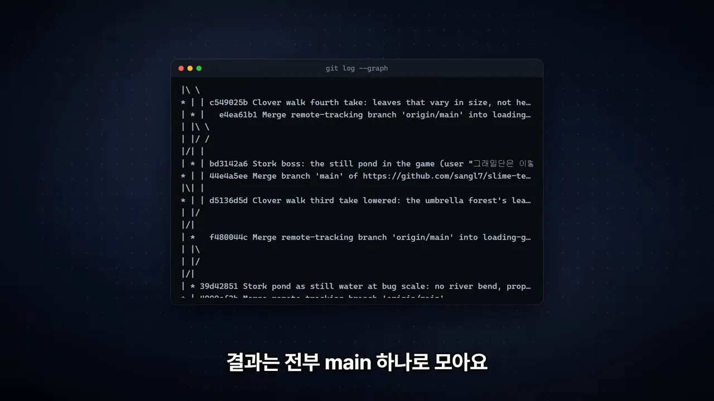
마무리
확인할 수 있는 건 AI가 스스로 확인하게 세팅하고, 재미있는지·우리 게임에 어울리는지는 사람이 봐요. 처음부터 다 갖출 필요는 없어요. 이 팀도 필요할 때마다 하나씩 붙이다 보니 여기까지 왔대요. 오늘 본 것 중 하나만 골라서 먼저 써 보라는 게 영상의 마지막 말이에요.